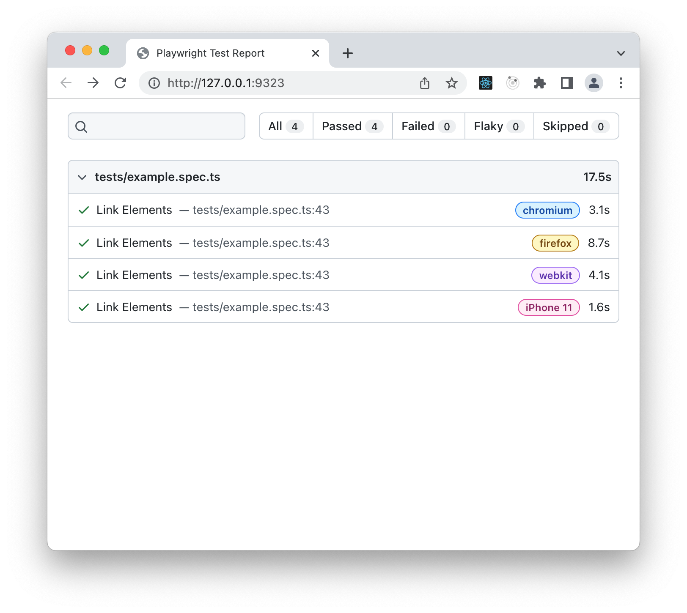
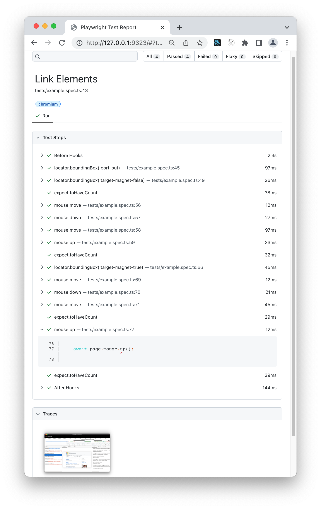

E2E testing is an integral part of ensuring your application behaves as expected. In the following tutorial, we will cover some common testing scenarios, and as JointJS doesn't limit you to a certain testing framework, we will hopefully give you some inspiration for whatever testing technology you choose to use.
To start with, let's introduce Playwright, the testing framework used in this tutorial. Playwright is a microsoft project, that supports all modern rendering engines, Chromium, Webkit, and Firefox. It also has cross-language support, so if your application uses TypeScript, Playwright has you covered. Playwright provides you with a lot of functionality right out of the box, and a very nice API to test your user interface.
Playwright can be used as a library, but we will be using it as part of the Playwright Test test runner. It was created specifically to accommodate the needs of end-to-end testing.
In this tutorial, we will be using TypeScript, but you are free to use JavaScript if you prefer. The JavaScript equivalent to many configuration examples shown here can be found on the Playwright getting started page.
If you would like to follow along with the tutorial, all the source code is available on github. The basic JointJS application below is the subject of the testing throughout this tutorial.
Application source code (JavasScript): testing-e2e-playwright.js
Playwright requires Node.js version 12 or above. Run node -v from the command line to make sure you have a
compatible version of Node.js. If you have a suitable version, we are ready to begin.
Our app and tests directories are located in our project root, so the root folder is where we will install the dependency
and default browsers. This tutorial uses version "@playwright/test": "1.22.1", and we encourage you to use
the same, so we are working with the same code. To install this version, run the following commands from the terminal.
// change to root directory
cd project-root
npm i -D @playwright/test@1.22.1
// install supported browsers
npx playwright install
As we want to enjoy all the features Playwright has to offer, we will also create a configuration file
playwright.config.ts in our project root, and add the code below. The following config
will run every test in Chromium, Firefox, and WebKit by creating a "project" for each browser configuration.
Playwright can also emulate mobile environments too, so we will create a project for the pixel and iphone too.
// playwright.config.ts
import { PlaywrightTestConfig, devices } from '@playwright/test';
const config: PlaywrightTestConfig = {
projects: [
{
name: 'chromium',
use: { ...devices['Desktop Chrome'] },
},
{
name: 'firefox',
use: { ...devices['Desktop Firefox'] },
},
{
name: 'webkit',
use: { ...devices['Desktop Safari'] },
},
// "iPhone 13 Pro" tests use WebKit browser.
{
name: 'iPhone 13 Pro',
use: {
browserName: 'webkit',
...devices['iPhone 13 Pro'],
}
},
// "Pixel 4 landscape" tests use Chromium browser.
{
name: 'Pixel 4 landscape',
use: {
browserName: 'chromium',
...devices['Pixel 4 landscape'],
},
},
],
};
export default config;
The basic setup is now complete, so we are ready to write our first test. We will place our test files in the
tests directory located in our project root. Every test spec will have the suffix
.spec.ts as we are using TypeScript. Let's create our first spec file, and name it
example.spec.ts.
Our first test simply visits the url where our application is served, and confirms the page title. As we are working locally, our url is our localhost, but of course you can insert your own url in this test example.
Playwright Test provides a test function
to declare tests, and an expect function
to write assertions (Playwright extends Jest's expect library for
assertions). The page argument
is a test fixture, it provides methods which allow you to interact with the browser.
import { test, expect } from '@playwright/test';
test('Visit Page', async ({ page }) => {
await page.goto('http://localhost:3000/');
const pageTitle = await page.title();
expect(pageTitle).toBe('JointJS App');
});
When we are satisfied with our first test, and have checked our application is up and running (in our case,
on localhost:3000), we simply run npx playwright test from our project root. The test
will run in headless browsers, and if successful, you should see something similar to the following output:
Running 5 tests using 2 workers
✓ [firefox] › tests/example.spec.ts:3:1 › Visit Page (8s)
✓ [chromium] › tests/example.spec.ts:3:1 › Visit Page (3s)
✓ [webkit] › tests/example.spec.ts:3:1 › Visit Page (2s)
✓ [iPhone 13 Pro] › tests/example.spec.ts:3:1 › Visit Page (1s)
✓ [Pixel 4 landscape] › tests/example.spec.ts:3:1 › Visit Page (849ms)
5 passed (12s)
Running tests in all rendering engines is certainly definitive, but what if we want to test something a little
quicker, and are satisfied with just one? To target chromium individually using our config file, we can
run npx playwright test --project=chromium from the command line.
Let's provide an incorrect page title to our test expectation in order to see what happens if our test fails. In the following output, Playwright provides some meaningful information such as expected/received values, and a call log for debugging purposes.
1) [chromium] › tests/example.spec.ts:8:1 › Visit Page ===========================
Error: expect(received).toBe(expected) // Object.is equality
Expected: "JointJS Ap"
Received: "JointJS App"
14 | });
15 | const pageTitle = await page.title();
> 16 | expect(pageTitle).toBe('JointJS Ap');
| ^
17 | });
Running this test in a headed browser may not be too beneficial, but let's see how we can achieve that.
npx playwright test --headed will run the test for each of our "projects" in their respective
headed browser. As the test just visits a page and confirms the title, Playwright will show us the browsers
for a very short time, and that's to be expected.
Playwright Test will automatically detect a playwright.config.ts file located in our project root,
so to make our development experience as easy as possible, we will also configure a few npm scripts.
In our package.json file, npm run test will run each of our projects for each test spec in
headless browsers, and npm run test:chromium will just run tests using the chromium rendering engine.
This isn't anything special, and just covers the commands we have already used so far.
{
"scripts": {
"test": "playwright test",
"test:chromium": "playwright test --project=chromium"
}
}
As Playwright is a microsoft project, a great extension is available for users of VS Code. It allows you to run tests with a single click while using step-by-step debugging, and setting breakpoints as you please. All of this can be achieved from the Testing sidebar in VS Code. We won't focus too much on the extension here as it's possible you use a different code editor, but if you are a VS Code user, it's definitely recommended.
After visiting your JointJS application, you may want to perform some simple sanity checks in order to check if the state
corresponds to your expectations. A tried and tested way of doing this is to determine if the text is displayed correctly.
Playwright provides some nice Selectors to
target elements which we expect to be present in the normal flow of our app. As we want our testing to be as robust and reliable
as possible, we will prioritize user-facing attributes, that means we will use mainly text or CSS selectors.
In our JointJS app, we are going to target our primary heading as we know it's content that rarely changes, and isn't impacted
by DOM structure changes. In the following example, our text selector is used to create a
Locator. Locators allow us to perform actions on
elements such as a click for example. A nice feature of Locators is that they are strict by design, that means operations on locators
will throw an exception if more than one element matches a given selector. This is great for our primary heading as we know it's
a unique piece of content on our page.
To set up shared resources between tests, you can utilize test hooks. As we want to visit our application before each test,
the test.beforeEach
hook can provide this nice functionality for us.
import { test, expect } from '@playwright/test';
test.beforeEach(async ({ page }) => {
await page.goto('http://localhost:3000/');
});
test('Primary heading isVisible', async ({ page }) => {
const heading = page.locator('text=E2E testing with JointJS & Playwright');
await expect(heading).toBeVisible();
});
In any JointJS application, there are common actions or scenarios you might like to test. In the following section, we will look at some of those situations, and hopefully give you some inspiration for your own testing suite.
Dynamic content is central to most modern applications, and if you are using JointJS, you probably want to test this scenario too. In the following case, a user fills an input field with text, and the value of this input will also be the value of an element label.
To approach this user story, we take advantage of the page fixture once more. We use the page.fill() method which accepts a selector as its first parameter, and the value to be filled as the second. Firstly, we target our input using a CSS element selector, and then provide the text value 'rect' as the second argument.
After that, it's just a matter of locating our element's label on the page using a custom class we have
created via className in our Cell
markup,
and confirming it has the text value we provided to our method.
If you are a user of JointJS+, you might use similar techniques when testing dynamic attributes in our ui.Inspector plugin.
test('User input changes attribute', async ({ page }) => {
await page.fill('input', 'rect');
const rectLabel = page.locator('.rect__dynamic-label');
await expect(rectLabel).toHaveText('rect');
});
An important part of any diagramming library is the ability to drag elements. What if we needed to automate the testing of relocating an element from one area of our application to another?
Playwright Locators provide a locator.dragTo() method which will help us implement this action without the need to write a lot of code. We simply need to create a Locator for our source and target, call the method on our source, and pass the target Locator as the first argument.
After the element has been dragged to the target location, we then assert if the top-left and bottom-right corner of our source element lie within the bounding box of the target element. This confirms the source element has been repositioned correctly.
If your application has many moving parts, you can likely take advantage of this method to test the dragging of elements
in a way that makes sense for your situation. Similar techniques might be used in JointJS+ for dragging an element from the
ui.Stencil plugin to the
JointJS paper.
test('Drag element to target location', async ({ page }) => {
const source = page.locator('.source');
const target = page.locator('.target');
await source.dragTo(target);
const sourceBBox = await source.boundingBox();
const targetBBox = await target.boundingBox();
// If top-left inner box corner is inside the outer box
expect(targetBBox.x).toBeLessThan(sourceBBox.x);
expect(targetBBox.y).toBeLessThan(sourceBBox.y);
// If bottom-right inner box corner is inside the outer box
expect(sourceBBox.x + sourceBBox.width).toBeLessThan(targetBBox.x + targetBBox.width);
expect(sourceBBox.y + sourceBBox.height).toBeLessThan(targetBBox.y + targetBBox.height);
});
Playwright also provides the ability to test drag & drop right out of the box. page.dragAndDrop() combines some of the functionality we have looked at in the last example into one concise method. We simply need to provide our source and target selectors as arguments, and it will take care of the rest.
As with our previous example of dragging elements, you could provide a similar assertion here, or create one that works for your testing scenario.
test('Drag and Drop', async ({ page }) => {
await page.dragAndDrop('.source', '.target');
// Your assertion
});
Linking elements successfully is another common pattern you may want to examine in JointJS. We have already looked at most
of the Playwright features in the following example, one additional class you'll notice is
Mouse. Every
page object has its own mouse accessible with page.mouse.
Mouse will help us automate a click on one element's port, and subsequently draw a link that connects to another element. After drawing our link, we can ensure our Locator resolves to an exact number of DOM nodes by using the following assertion expect(locator).toHaveCount().
In your JointJS application, it's likely you will only allow connections between some of your elements. In the following example,
we mock a situation which you might run into. First, we try to draw a link from our port to an element which contains the
attribute [magnet=false]. This means a link should not be allowed, and the number of links in our diagram should
resolve to 0.
Next, we repeat the same mouse actions, but this time our new target element contains the attribute [magnet=true].
Now, our diagram should contain a link, and the number should resolve to 1. Just to be sure our test is working as we expect,
we also perform an additional check to see if a highlight is present. A highlight should be present if a connection is possible,
so after our mouse up action, we can also confirm it resolves to 1 DOM node.
test('Link Elements', async ({ page }) => {
const source = page.locator('.port-out');
const sourceBBox = await source.boundingBox();
// Element has attribute [magnet=false]
const target1 = page.locator('.target-magnet-false');
const target1BBox = await target1.boundingBox();
// No link should be present in DOM
const link = page.locator('.joint-type-standard-link');
await expect(link).toHaveCount(0);
// Mousemove to center of element
await page.mouse.move(sourceBBox.x + sourceBBox.width / 2, sourceBBox.y + sourceBBox.height / 2);
await page.mouse.down();
await page.mouse.move(target1BBox.x + target1BBox.width / 2, target1BBox.y + target1BBox.height / 2);
await page.mouse.up();
// A link still shouldn't exist as target has attribute [magnet="false"]
await expect(link).toHaveCount(0);
// Element has attribute [magnet=true]
const target2 = page.locator('.target-magnet-true');
const target2BBox = await target2.boundingBox();
// Mousemove to center of element
await page.mouse.move(sourceBBox.x + sourceBBox.width / 2, sourceBBox.y + sourceBBox.height / 2);
await page.mouse.down();
await page.mouse.move(target2BBox.x + target2BBox.width / 2, target2BBox.y + target2BBox.height / 2);
// A highlight should now display on the target element to show a connection is possible
const highlight = page.locator('.joint-highlight-stroke');
await expect(highlight).toHaveCount(1);
await page.mouse.up();
// A link should now exist as target has attribute [magnet="true"]
await expect(link).toHaveCount(1);
});
As we want to maintain a consistent visual state for our JointJS application, we will also perform a test to see if our app has
regressed visually in some manner. Playwright Test allows us to produce and visually compare screenshots. Let's create a new file
in our tests folder visual-regression.spec.ts, and add the following test.
Usually, it's a good idea to manipulate your application state somehow before taking a screenshot, so if you would like, you can place some similar actions that we have covered already in the following test, or some actions that are more relevant to your testing scenario.
import { test, expect } from '@playwright/test';
test.beforeEach(async ({ page }) => {
await page.goto('http://localhost:3000/');
});
test('visual regression', async ({ page }) => {
// Your actions to manipulate application state
expect(await page.screenshot()).toMatchSnapshot();
});
On the first test run, Playwright will generate reference screenshots, and subsequent test runs will compare against the reference. On the first run, you should see some output similar to the following error, but don't worry, that's expected because there isn't any "golden" file for comparison yet.
// Error: visual-regression.spec.ts-snapshots/visual-regression-1-chromium-darwin.png is missing in snapshots, writing actual.
"Golden" snapshots will be located in the tests directory, and placed within a folder that corresponds to the name of your test file.
In our case it will be tests/visual-regression.spec.ts-snapshots. As we have a project set up for each rendering engine,
the folder will contain a snapshot for each one respectively after running npm run test.
After comparing your "golden" snapshot with the current state of your application, it's only natural that you may need to make further changes to visual aspects of your project. In this case, you will need to update your snapshots in order for visual regression tests to run successfully again. To update snapshots, you can run the following command:
npx playwright test --update-snapshots
You could also create another npm script for updating snapshots.
"test:update-snapshots": "playwright test --update-snapshots"
An important part of any testing implementation is debugging. As we have now covered some typical UI testing flows with JointJS, let's look at how we can debug in Playwright should any of our tests fail.
The first tool we will look at is the Playwright Inspector.
Inspector is a GUI tool that helps authoring and debugging Playwright scripts. To launch the inspector, we need to set the
PWDEBUG environment variable to run our scripts in debug mode. This configures Playwright for debugging and opens
the Inspector.
In Bash, we can run the following command:
PWDEBUG=1 npm run test
As we don't want to type this every time, we will set up an npm script in our package.json for this too. We
will take advantage of our previous scripts, and just set up debugging in chrome, as we want to use chrome dev tools
for debugging.
"test": "playwright test",
"test:chromium": "playwright test --project=chromium",
"test:update-snapshots": "playwright test --update-snapshots"
"test:debug": "PWDEBUG=1 npm run test:chromium"
Running npm run test:debug will open our Inspector, and because we configured PWDEBUG=1, some
useful additional defaults are configured for us. Firstly, the browsers launch in headed mode giving us easy access to
chrome dev tools. Secondly, the default timeout is set to 0, this means our tests won't exit with an exception after a certain
amount of time. Lastly, it also configures a playwright object in the browser to generate, and highlight
Playwright Selectors.
When the Inspector window opens, it will be paused on the first Playwright statement. As we set up a beforeEach
test hook earlier, our first statement is await page.goto('http://localhost:3000/'). Using the provided
control tools in the Inspector, we can step over each Playwright action, or resume the script without further pauses.
Clicking the Explore button allows us to hover over elements on screen, and click them to automatically generate selectors for those elements. Similarly, typing a Selector in the input field will highlight any matching element on screen.
In the illustration photo of our Inspector, the bottom half shows you the Playwright actions from our Linking Elements
test earlier. You can view the log of each Playwright action via the dropdown arrow. In our photo, we can see our assertion
await expect(link).toHaveCount(1) has resolved to 1 element giving us confidence a link has been drawn, and
our test is working as we intended. If actionability can't be reached, or there are some test related errors, it will
also be shown in the Inspector logs.
As the Inspector has also launched chrome in headed mode, we have access to all of the usual dev tools we are
accustomed to as we step through our testing scripts. Using the playwright object in dev tools also
gives us access to an API which may also be useful for you depending on your situation.
playwright.$(selector) highlights the first occurrence of a selector, and returns the matching element, while
playwright.$$(selector) returns all matching elements respectively. You can see more examples of this API
in the Playwright debug documentation.
Playwright Test comes with a few built-in
reporters for different needs, and the
ability to provide custom reporters. In this tutorial, we will focus mainly on the HTML reporter as it provides a nice way to
interact with the Trace Viewer which we
want to examine too.
Simply put, the HTML reporter creates a directory playwright-report which presents our test report data in a web page. This web page also allows us to interact with a GUI tool that contains a trace which helps troubleshoot our test runs.
To begin, we need to provide some additional configuration options to playwright.config.ts.
trace: 'on' will create a trace for each test (success or failure), while reporter: 'html'
simply states our reporter type.
// playwright.config.ts
import { PlaywrightTestConfig, devices } from '@playwright/test';
const config: PlaywrightTestConfig = {
use: {
trace: 'on',
},
reporter: 'html',
projects: [
// project options
],
};
export default config;
We will also add one more npm script to our package.json which allows us to open the last HTML report run.
"scripts": {
"test": "playwright test",
"test:chromium": "playwright test --project=chromium",
"test:update-snapshots": "playwright test --update-snapshots"
"test:debug": "PWDEBUG=1 npm run test:chromium",
"test:report": "playwright show-report"
},
Again, the setup required to take advantage of this functionality was quite minimal. From our project root, we can now
npm run test which will create our report, followed by npm run test:report which will serve
our HTML report page.
The first photo below displays the landing page of the HTML reporter. It contains one collapsible section per
test spec. Our reporter shows one test spec tests/example.spec.ts containing one test 'Link Elements'
in each rendering engine. The search input and clickable rendering engine tags provide test filtering.
Navigating to a particular test name brings you to the test detail which is illustrated in the second photo. Once more, you are provided with Playwright test actions similar to what we encountered in the Inspector. The action dropdowns show the related code from the respective test.
 
At the bottom of the test detail, the test's trace is displayed. This is what we configured in
playwright.config.ts. Clicking on the trace brings you to the Trace Viewer GUI which is shown in the photo
below. This interface provides several useful sections for debugging our tests.
The interface header contains the title for both our test and test spec. Underneath those, we are provided with a timeline which displays snapshots of the application state throughout the test run. Hovering the timeline displays a magnified image from that time, and also highlights the particular Playwright action that is occurring in the left column. This helps locating the action of interest very quickly.
The left column contains Playwright actions, and some metadata such as viewport sizing or rendering engine used. Hovering the actions will highlight the position at which the action occurs in the timeline above. Clicking on an action will display details in the right column such as the expected/received values from our assertions.
The middle column displays before and after snapshots for each Playwright action. The before snapshot displays
the time the action is called, so our final mouse.move action in "Link Elements" won't show that a link
has been drawn to our target. The after snapshot however will show a link has been drawn to the target, and also
display the highlight that we expect to be present. These snapshots can be especially useful for knowing exactly where
Playwright has clicked.
Of course, Playwright provides functionality to use Reporters and the Trace Viewer independent of each other. The manner in which we used them together here was just convenient for illustration purposes.
There are no limitations to which testing framework you can use with JointJS. These choices naturally often depend on existing project architecture or personal preferences, and you can certainly create similar UI automation tests covered here with other testing frameworks.
Overall, Playwright is a very versatile tool. It integrates well with project architecture, and most importantly, it's an effective tool for doing e2e testing in JointJS applications. Playwright makes writing automation tests very easy, and the learning curve isn't steep, so you should be able to get up and running quite quickly.
Congratulations, if you have made it this far, and I hope this tutorial can provide you with some inspiration for your own e2e tests. Thanks for reading.